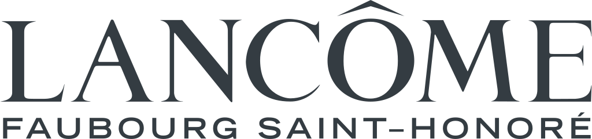
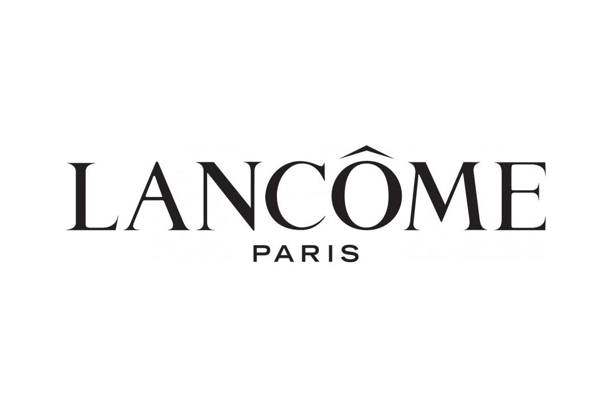

랑콤 LANCÔME
랑콤(Lancôme)은 로레알 그룹 산하의 프랑스 럭셔리 화장품 브랜드이다.
최종 업데이트

랑콤은 어떤 브랜드인가
랑콤(Lancôme)은 1935년 아르망 프티장(Armand Petitjean)이 파리에서 설립한 프랑스 럭셔리 뷰티 브랜드다. 향수에서 출발해 스킨케어와 메이크업까지 확장했고, 1964년부터 로레알(L'Oréal) 그룹 산하 럭셔리 부문에 속해 있다.
로레알 럭스(L'Oréal Luxe) 사업부의 핵심 축으로 꼽히며, 90개국 이상에서 판매되는 글로벌 프레스티지 브랜드로 자리한다.
랑콤은 어떻게 봐야 할까
같은 럭셔리 뷰티라도 결이 다르다. 에스티로더(Estée Lauder)가 미국식 과학·고기능 안티에이징을 앞세우고 디올 뷰티가 패션 하우스(LVMH)의 쿠튀르 이미지를 빌려온다면, 랑콤은 장미와 프로바이오틱스 같은 식물 유래 성분, 광채와 피부 장벽 회복이라는 프랑스식 우아함을 정체성으로 내세운다.
제품 포트폴리오는 세 기둥으로 읽힌다. 스킨케어의 제니피크(Génifique), 고가 라인 압솔뤼(Absolue), 향수의 라비에벨(La Vie Est Belle)이다.
로레알 럭스 부문에서 매출 비중이 큰 간판 브랜드이며, 한국 시장에서는 정호연이 글로벌 앰배서더로 라비에벨 캠페인에 참여하는 등 K-스타 기용으로 현지 존재감을 키워왔다.
랑콤은 어떻게 시작되고 성장했나
창업자 아르망 프티장은 향수 거장 프랑수아 코티(François Coty) 밑에서 조향을 익힌 뒤, 50세이던 1935년 자신의 브랜드를 세웠다. 그해 브뤼셀 만국박람회에 트로피크, 콩케트, 키프르 등 첫 향수 다섯 종을 선보여 호평받았다.
1936년 첫 스킨케어인 보습 크림 뉘트릭스(Nutrix)를 출시했고, 1938년에는 립스틱으로 메이크업까지 영역을 넓혔다. 브랜드명은 프랑스 앵드르 지방의 랑콤(Lancosme) 숲과 방돔 광장의 어감에서 따왔다.
1961년 프티장이 아들에게 사업을 넘겼고, 1964년 로레알이 인수하며 글로벌 확장의 발판을 마련했다. 이후 제니피크 세럼 등 히트작이 잇따르며 프레스티지 스킨케어 강자로 올라섰다.
랑콤의 브랜드 아이덴티티는 무엇인가
랑콤의 상징은 황금빛 장미다. 랑콤성(Château de Lancosme) 폐허에 핀 꽃과 식물화가 피에르 조제프 르두테(Pierre-Joseph Redouté)의 그림에서 영감을 받았다고 전해지며, 여성성과 시간을 견디는 아름다움을 함축한다.
로고는 단정하고 시크한 우아함을 원칙으로 삼아 안정감과 전문성을 드러낸다. 타깃은 광채와 안티에이징을 중시하는 성인 여성층이며, 럭셔리하되 친근한 '행복으로서의 아름다움'이라는 메시지로 브랜드 보이스를 다듬는다.
랑콤의 대표 제품과 서비스는 무엇인가
스킨케어는 비피더스 프리바이오틱·히알루론산을 담은 제니피크 세럼과 고가의 압솔뤼 크림이 중심이고, 메이크업은 파운데이션·립·아이 라인을, 향수는 대표작 라비에벨을 축으로 한다. 한국 기준 제니피크 크림은 약 11만 원대, 세럼 100ml는 약 14만 원대로 프레스티지 가격대다.
백화점 카운터, 면세점, 랑콤 공식 온라인몰과 신세계몰 등 주요 이커머스에서 판매된다.
랑콤은 누가 만들고 이끌었나
창업자: 아르망 프티장(Armand Petitjean)이 1935년 창립했다. 소유: 로레알 그룹(L'Oréal, 1964년 인수) 럭셔리 사업부.
랑콤은 지금 어떤 상태인가
모회사는 프랑스 로레알 그룹이며 본사는 파리에 있다. 로레알의 2024년 연결 매출은 약 435억 유로, 그 가운데 럭셔리 사업부인 로레알 럭스가 가장 큰 비중을 차지하고 랑콤이 그 핵심 브랜드로 기여한다.
다만 랑콤 단일 브랜드의 매출과 영업이익은 그룹 합산으로 통합 공시될 뿐 개별 수치는 공식적으로 공개되지 않는다.
랑콤 연혁 — 주요 사건은 언제였나
랑콤 로고는 어떻게 변해왔나
대표 로고대표 브랜드 마크 BI/CI 아카이브보관 이미지 1
BI/CI 아카이브보관 이미지 1
BI/CI 아카이브 2보관 이미지 2
BI/CI 아카이브 3보관 이미지 3 BI/CI 아카이브 4보관 이미지 4
BI/CI 아카이브 4보관 이미지 4자주 묻는 질문
랑콤는 어떤 산업의 브랜드인가요?
랑콤는 뷰티·퍼스널케어 분야의 브랜드입니다.
랑콤의 브랜드 아이덴티티는 무엇인가요?
랑콤의 상징은 황금빛 장미다.
랑콤의 대표 제품은 무엇인가요?
스킨케어는 비피더스 프리바이오틱·히알루론산을 담은 제니피크 세럼과 고가의 압솔뤼 크림이 중심이고, 메이크업은 파운데이션·립·아이 라인을, 향수는 대표작 라비에벨을 축으로 한다.
랑콤는 현재 어떤 상태인가요?
모회사는 프랑스 로레알 그룹이며 본사는 파리에 있다.
랑콤의 공식 웹사이트는 어디인가요?
랑콤의 공식 웹사이트는 https://www.lancome.com/ 입니다.
출처와 검증
랑콤 관련 참고: 공식 웹사이트. 브랜드명은 한글과 원어를 함께 표기하되 데이터에 없는 표기는 만들지 않습니다. 기원 국가·설립연도는 검수된 정의문에서 확인된 값을 우선하고, 없을 때만 공식 웹사이트 URL이 일치하는 위키데이터 개체의 값을 씁니다.